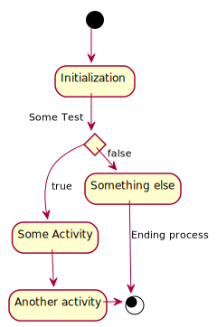

UML Diagrams with PlantUML
For my first bigger project I had to construct a flow diagram describing the architecture of a back-end model analytics model I am working on.
This post briefly discuss on UML and gives the set-up of Plantuml on
emacs.
Why UML?
I recalled the notion of UML I studied a couple of years ago in a compulsory course of business informatics. At the time my eyes were all about macroeconomics and the few classes I had on it deeply annoyed me. A more dry material was difficult to imagine.
Now, with time, shifting my interests towards CS, and getting involved in more complex projects I am starting to appreciate the importance of working in a structured way, documenting the most. Furthermore, I am starting to understand the importance of working with modular architectures and the importance of OOP. A lot of progress have to be done in both as I never was a particularly organized person but I decided it is time to start to get my head around it.
I read online and I understood the wide spread usage of UML
diagrams. Especially interesting was the notion of Round-trip
Engineering with code-generators and reverse engineering, two
topics I aim to go back at some point.
In any case I started to play around with plantuml for a project I
am working on and I am actually both enjoying and appreciating working
with it, the next section introduces the set up of it.
Set up
In order for you to work with Plantuml on emacs the first thing you
have to do is to install graphiz as some plantuml generated images
leverages it.
On MAC OSX this can be done by running in your shell
$ ruby -e "$(curl -fsSL https://raw.githubusercontent.com/Homebrew/install/master/install)" < /dev/null 2> /dev/null
$ brew install graphviz
Secondly you have to download the java .jar file running
plantuml. This can be done at the following link. Once downloaded I
moved the .jar file into the .emacs.d directory.
Once this is done you have to add the jar file to your org mode configuration (there is a variable already set for it)
(setq org-plantuml-jar-path
(expand-file-name "~/.emacs.d/plantuml.jar"))
Finally you simple have to add plantuml as a language for your
babel configuaration
(org-babel-do-load-languages
'org-babel-load-languages
'((plantuml . t)))
You can furthermore check for the successful configuration of the
installed graphviz module by running
@startuml
testdot
@enduml
This should display an image with the installed graphviz version.
You are now ready to go. A minimal example can now be for an activity diagram taken for very good official plantuml webpage.
@startuml
(*) --> "Initialization"
if "Some Test" then
-->[true] "Some Activity"
--> "Another activity"
-right-> (*)
else
->[false] "Something else"
-->[Ending process] (*)
endif
@enduml

Many other interesting options such as creating mind-maps with org-mode syntax exists.